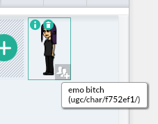
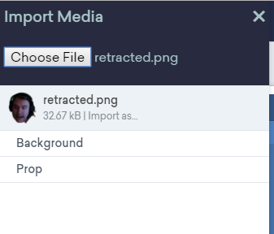
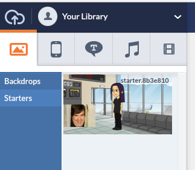
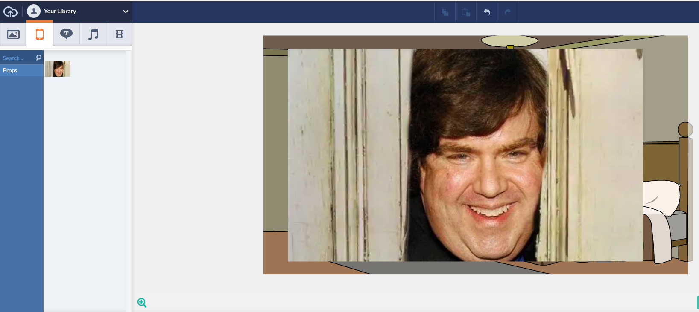
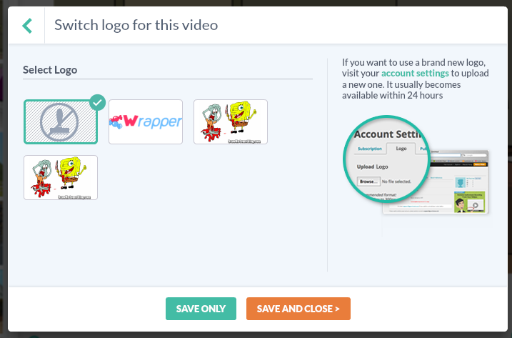

Wrapper: Offline (Revision)
A version of Wrapper: Offline meant to complete the GoAPI.
Take me thereFeatures
Wrapper: Offline (Revision) brings features never seen in any open-source, public version of Wrapper before, such as:
- Watermarks
- True importing
- Asset info
...as well as:
- Video previewing
- Working TTS
- Starters
Show me!
Looking for previews, tests, and screenshots? You've come to the right place.
    